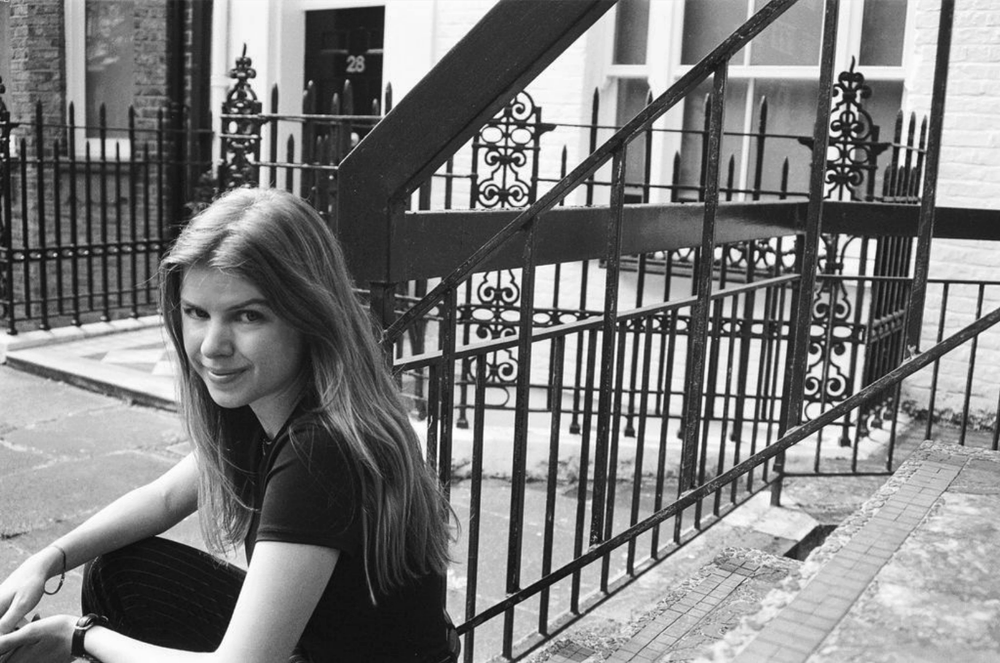

Eliska Kohlert is a photographer working with black-and-white 35mm film, focusing on portraiture, movement, and editorial work.
Her work explores the human body in motion, often collaborating with dancers, performers and creatives across disciplines.
All images are shot on the Olympus OM-10, embracing the analogue imperfections and utter uniqueness.
Based in London & Prague.